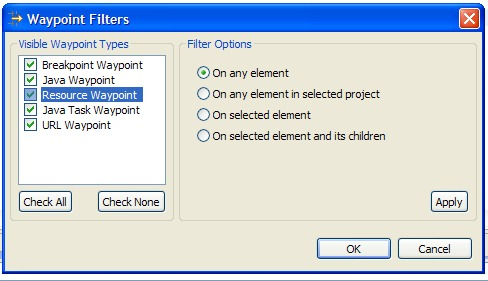
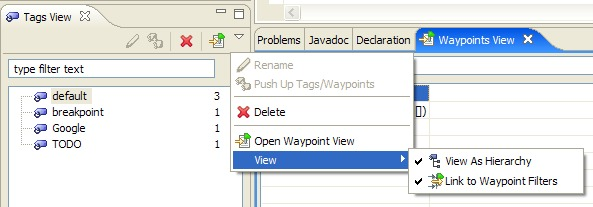
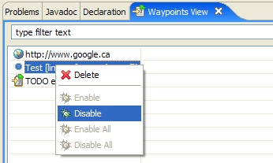
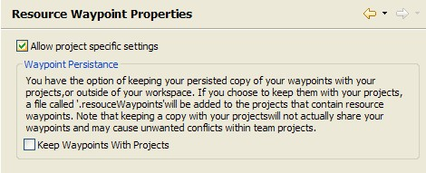

Tags for Software Engineering Activities in Eclipse
New and Noteworthy in 0.6.0
Core
Improved plugin architecture |
There are now two ways of describing waypoint types:
net.sourceforge.tagsea.waypoint
extension point and using the interface
element. The platform will automatically
create a WaypointInterface object that
represents the extension and can be used
to query things like attribute names and types for the
interface. Both WaypointInterface
and AbstractWaypointDelegate now implement
the IWaypointType interface
and can be retrieved through the new API method
TagSEAPlugin.getDefault().getWaypointTypes.
All previous API still remains.
|
Improved tag/waypoint change support |
It is now possible to nest TagSEAOperations inside eachother. Previously, if you ran a TagSEAOperation as a blocking call within another operation, deadlock would occurr. The Platform now handles this case and allows the operation to run. Waypoint and Tag change events are deferred to the end of the top-level operation. |
Core UI
Improved waypoint filtering |
The waypoint viewer can now filter based on waypoint
type. Clients also have
the option of contributing filtering ui for their
waypoints. 
Custom filter options can be added using the
net.sourceforge.tagsea.filters
extension point. The filter must be contributed in the
same plugin that defines the waypoint.
|
More extensive tag filtering |
It is now possible to link that filtering in the tags view to the waypoints view. 
Enabling this preference will make it so that only tags that are referenced by waypoints that pass the contributed waypoints filters will be displayed in the tags viewer. |
Custom actions in the waypoints view |
Custom actions can now be contributed to the waypoints view context menu. 
The actions are contributed using the normal object contribution method for context menus. The javadoc documentation for the IWaypoint interface describes how to set the enablement and visibility of your actions based on the waypoint type. |
Resource Waypoints
New method for saving waypoints |
Resource waypoints can now be persisted inside your workspace projects, or outside of them. 
This preference can be changed globally using the Resource Waypoints preference page, or on a per-project basis using the properties of a project. By default, the waypoints are saved outside of the workspace in order to avoid unwanted conflicts in team projects. We are currently working on methods of synchronizing and sharing waypoints. |
Resource waypoints filter based on selection |
You can filter resource waypoints based on the current workbench selection. Java waypoints and Java Task waypoints have the same options. |
Extras
Four new waypoint types |
Four new waypoint types: URL waypoints, Java Task waypoints, Breakpoint waypoints, and C/C++ waypoints have been added in the "extras" feature which can be downloaded seperately from the TagSEA core feature. URL waypoints allow you to "bookmark" any url in Eclipse and open it in the Eclipse web browser. Java Task waypoints expose your Java TODO's, FIXME's, etc., as TagSEA waypoints. Breakpoint waypoints do the same for breakpoints. C/C++ waypoints allow you to create tags and waypoints in your C/C++ code. |
Tags for Software Engineering Activities in Eclipse (TagSEA)
is a research collaboration between
the University of Victoria's
Computer Human Interaction & Software Engineering Lab
and the IBM Watson Research Centre.